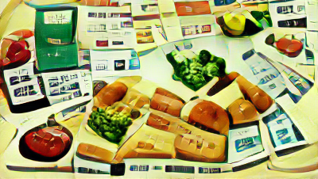

Food sovereignty in a literal dictatorship
I’m a concerned citizen. I read the news, I see the hills near my house burning, cities like mine flooding, I read about my city going underwater in 20 years, but before I can make the concerned citizen calls or grow a forest - I need to eat.
And, I am a concerned citizen who lives in a food monopoly.
In Bangkok, Thailand, there is a 7/11, Tesco Lotus, and Makro for every newborn. Sometimes, you’ll even see two 7/11s right next to each other.CP, a food and telecommunications conglomerate, owns it all.
Analysts have said that concerns anti-trust concerns over CP’s bid were overblown as the anti-trust laws in Thailand are not that strict and that the penalty is a mere 0.5% of the deal which in this case could be around $50 million.
On top of the food monopoly, CP also dents farmer livelihoods for life through extractive monocropping practices.
During the lockdown, I’m buying in bulk at Makro - which means everything that has passed through my digestive system was hand fed by CP, who - as mentioned above - sucks. What are my other options? I could buy from mom and pop sellers at fresh markets, but many buy their wares from Makro. How much of my existing diet is fed by this one tiny conglomerate? My condo balcony farm is in progress, but so far, all I got is tomatoes. And a lot of the time, birds get to them first.
This Are.na channel will track everything that goes into my body, where its made, where the money flows to, and ways I’ll try to diversify my diet.
Main Questions:
- How much control does 1 company have over our food (via seed, agriculture, distribution, logistics, etc)
- What current risks could happen 10 years into the future?
- How can a town mouse like me have more control over my food?
Reality Augmented: How Pokemon Go Bridges Surveillance Geography in Urban Spaces: Singapore and Bangkok
Past research proposal, in collaboration with Michelle Lai
In 2016, Google spin-off, Niantic, released Pokemon Go to worldwide acclaim. The free, Augmented Reality game uses GPS to locate, capture, battle, and train virtual Pokemon as if they are in the players’ real world location. In exchange, the company captures an enormous amount of player data that they then use to incentivize real world behaviors.
Pokemon Go has instigated a rare, large scale shift in human mobility patterns that re-emphasizes certain biases in geography, drawing players towards business districts, urban places with relatively few minorities, as well as advantaging players who come from these areas. This reinforces a narrative of control, where spaces reinforce powers held by certain stakeholders. This geography profile also tends to be heavily surveilled through CCTV, and in Singapore, facial recognition and private security officer patrols – a move that targets minorities and migrant workers above anyone else.
These new forms of control have not supplanted the old forms of surveillance, but have made them more refined, more flexible, cheaper, and as a result, more comprehensive. Niantic’s ability to use PokeStops to incentivize transitory migrations within cities shows an increasing economic privatization of once public spaces, with corporations like McDonalds paying up to $900,000 per day for sponsored PokeStops. Just as Google mines our data to sell ads for products we’re socially engineered to want, Pokemon Go mines player movements to silently herd them into businesses where they’re expected to buy something in exchange for the right to be there. This is the physical manifestation of surveillance capitalism.
Our research will use Bangkok and Singapore as case studies for Pokemon Go’s effect on player attitudes towards surveillance capitalism, and player migration into central, more traditionally watched spaces within each city. Due to their high urban density, high Pokemon Go user density, growing economic developments, widespread adoption of CCTV and facial recognition software, smart city plans, interface networks, and infrastructure, these cities are prime targets for wide scale socialization of surveillance capitalism. We will survey the evolution and representation of surveillance capitalism in the last 5 years, using the invisible digital overlay on each city to inspire a dialogue on privacy and surveillance.
We believe PokemonGo’s ability to augment reality gives it the unique power to remake places in a fashion that reinforces existing power structures. Wide scale location based gaming is still a relatively new phenomenon, and as such, requires careful scrutiny of the system of spaces. Our study aims to uncover potential long-term effects on citizens and urban design.